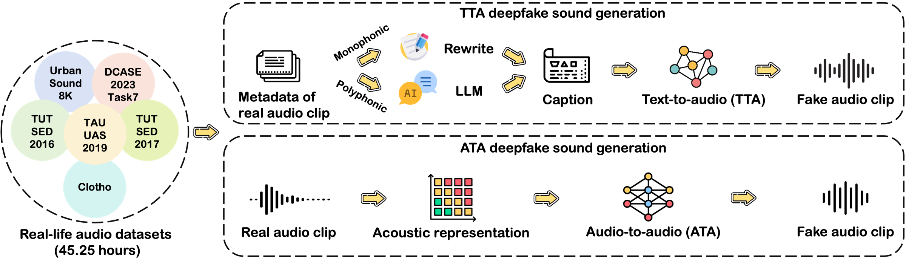

Three clips match the same description. One is a real recording; the other two were generated by models in EnvSDD. Listen, then pick the real one.
Round 1
0 / 0 correct
02
Real vs. generated, side by side
One real clip from each source dataset, next to fakes generated by all seven models: five text-to-audio models prompted with the caption, and two audio-to-audio models driven by the real clip.
03
The EnvSDD benchmark
Audio generation systems now create very realistic soundscapes. That helps media production, but it is also a risk. Deepfake detection research has mostly studied speech and singing voice. Environmental sounds have different characteristics, so those detectors may not carry over, and existing datasets for environmental sound deepfakes are limited in scale and audio types.
EnvSDD is the first large-scale curated dataset for this task: 45.25 hours of real and 316.74 hours of fake audio. Real clips come from six public datasets; fakes are generated with five text-to-audio (TTA) and two audio-to-audio (ATA) models. The test set includes unseen generators and unseen source datasets to measure how well detectors generalise.
We also propose a detector built on a pre-trained audio foundation model (BEATs + AASIST). On EnvSDD it outperforms state-of-the-art systems from the speech and singing domains.

How EnvSDD is built. Real clips from six datasets (45.25 h) are turned into fakes two ways: captions written from their metadata drive text-to-audio models, and the real audio itself drives audio-to-audio models.
Test 01
In-domain
Same source datasets and generators as training.
seen generatorsseen datasets
Test 02
Unseen generators
Fakes from models never seen in training.
unseen generatorsseen datasets
Test 03
Unseen datasets
Real audio from sources held out of training.
seen generatorsunseen datasets
Test 04
Fully out-of-domain
Both the generators and the sources are new.
unseen generatorsunseen datasets
04
From benchmark to community challenges
EnvSDD became the basis of the first environmental sound deepfake detection challenges. Below are the top five teams of each; full results and system descriptions are in the overview papers.
Built directly on EnvSDD, with two tracks: detecting fakes from unseen generators, and a black-box, low-resource setting with very little data from the target generators.
97 registered teams
1,748 valid submissions
2 tracks
Track 1 · EER (%), lower is better · best system per team
#
Team
System
EER ↓
1
AHU
EAT+AASIST
0.30
2
DFKI
EAT-L+BiCrossMamba
0.80
3
CUC
SSLAM+FFN
1.20
4
CAU
BEAT2AASIST
1.60
5
BIT
EAT+ArcFace
2.40
Baseline: BEATs+AASIST
13.20
Baseline: AASIST
15.02
Track 2 · EER (%), lower is better · best system per team
ESDD 2 · Environment-Aware Speech and Sound Deepfake Detection Challenge
Extends the task to mixtures: the speech and the environmental sound in a clip can each be real or spoofed, giving a five-class problem on CompSpoofV2.
If you use EnvSDD, please cite the benchmark paper. If you use the challenge data or compare against challenge systems, please also cite the corresponding overview paper.
EnvSDD · Interspeech 2025
@inproceedings{yin2025envsdd,
title = {{EnvSDD}: Benchmarking Environmental Sound Deepfake Detection},
author = {Yin, Han and Xiao, Yang and Das, Rohan Kumar and Bai, Jisheng and Liu, Haohe and Wang, Wenwu and Plumbley, Mark D.},
booktitle = {Interspeech 2025},
pages = {201--205},
year = {2025},
doi = {10.21437/Interspeech.2025-1143}
}
ESDD 1 challenge overview · Interspeech 2026
@misc{yin2026esdd1,
title = {The First Environmental Sound Deepfake Detection Challenge: Benchmarking Robustness, Evaluation, and Insights},
author = {Han Yin and Yang Xiao and Rohan Kumar Das and Jisheng Bai and Ting Dang},
year = {2026},
eprint = {2603.04865},
archivePrefix = {arXiv},
primaryClass = {cs.SD},
url = {https://arxiv.org/abs/2603.04865}
}
ESDD 2 challenge overview · ICME 2026 workshop
@misc{zhang2026esdd2,
title = {Overview of {ESDD2}: Environment-Aware Speech and Sound Deepfake Detection Challenge},
author = {Xueping Zhang and Han Yin and Yang Xiao and Lin Zhang and Ting Dang and Rohan Kumar Das and Ming Li},
year = {2026},
eprint = {2606.10791},
archivePrefix = {arXiv},
primaryClass = {cs.SD},
url = {https://arxiv.org/abs/2606.10791}
}